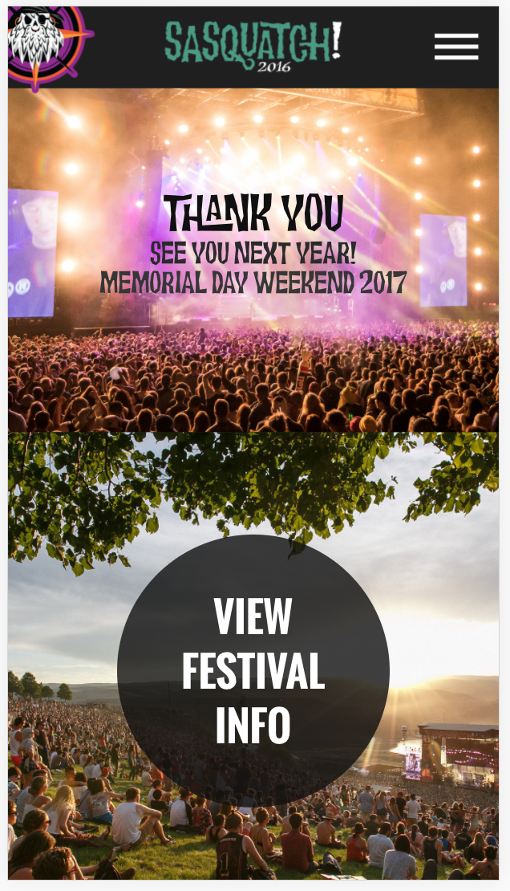

Bastille - Eye of the Stormers

I immediately felt that the hierarchy was well prioritized, as the large, centered word “BASTILLE” was the reason for me clicking on and using this site for my first blog post. Titled, “Bastille: Eye Of The Stormers (appropriately named after the band’s fanbase), the first page is extremely simple—it provides a clear focus (Bastille), links to Spotify (the company who created the website) and a quick and easy way to stream the band’s new album. Most importantly, centered beneath the title, there is a link to the interactive site. As soon as you enter the site, it also greats you with a new song from their album, apparently chosen at random.
The visuals in the background are extremely beautiful, reminiscent of a fire with embers floating into the night. Another subtle but extremely satisfying detail found in the background is the interactivity. As you move the mouse around the page, the embers or dust particles are pushed around as if your cursor is blowing them away.
The colors are visually pleasing and fit perfectly with their first album, Bad Blood which was predominantly brown with various shades of gold. Their new album (which the promotion of, I assume, is the reason behind the site) has many browns and gold tones however also a large amount of blue and grey. To make the website feel like it is more for their latest release, using more blue/grey would have been a good idea.
Upon clicking on the main link and entering further into the site, I found that they did indeed feature a blue/grey tone. On the left hand side of the site page there is a list of statistics featuring major cities around the world and the number of times each city has listened to the album ordered from highest number of streams to the lowest. The city furthest down on the list is featured in the blue grey color previously mentioned. This brings up yet another issue I have with the site. The blue really pops out against the other colors used on the site, however they use it to highlight the cities that are lowest on the list. It would have been much more successful if they use the bright blue to direct attention to the cities who have streamed the album the most.
Being that I am a big Bastille fan, I knew that these colors matched the band’s aesthetic and color theme well; however for someone who is not familiar with the band, they might find the colors to give the website and features a polluted and dirty feel. Especially when actually entering the site and being presented with a interactive, three-dimensional globe, the brown and dusty look make the earth appear polluted.
The interactive earth is a fantastic visual that really hooked me into the site. The user is able to click and hold the earth and discover storms varying in size, representing the cities who have listened to the album the most, and thus, brought on a large “storm” over their city.
BLOG POST 2 | 10.10.16Coffee Roaster Page Assignment

I was excited to find that as we made our way through the Coffee Shop website exercise as a class, I was understanding each and every code we put into place. It seems to me that in order to be a coder, one important aspect is to remember elements and their assets, and remember the order to place everything. Once I completed the Coffee Shop home page without any bumps, we were told to then create the "Our Roasters'' page on our own. Although I had found the Coffee Shop page to be fairly easy, I suddenly believed the ease to have been due to the fact that we were all following the lead of my professor. I felt there was no way I could do it on my own.
I quickly discovered that would not be the case. As soon as I started typing , all the other code started coming back to me and I quickly finished the basic html code. Once I got the the CSS, I got a little worried again. I slowly began typing the CSS, but before I got too far, realized something that would save me a lot of time: the CSS for the "Our Roasters" page was the same as the CSS for the home page. I quickly copied and pasted the CSS link and finalized the page by adding the appropriate picture tag, and was finished. I was super excited about the whole ordeal (no sarcasm).
BLOG POST 3 | 10.24.16A List Apart: "Why Aren't You Asking Questions?"
I was immediately excited when I saw the title of this article. “Why Aren’t You Asking Questions?” This is, of course, in regards to asking your client questions as a designer. Recently, over the summer, I was commissioned by a band in the United Kingdom to create two gig posters for their upcoming shows. I immediately said yes, and was blinded by my excitement of even being asked, and forgot to ask any questions. Needless to say, this led to a rocky process, and I experienced months of redesign that would have been otherwise unnecessary had I asked QUESTIONS!
That tip in itself would have helped me greatly in that process; however this article goes into even more depth, clarifying everything from important questions to ask, and addressing who to ask. I found that it is not only good to ask questions, it is good to have an ongoing dialogue with the client, to keep them updated on the process, and so they can update you on what they want changed in real time.
Asking about the “end user’s needs” is also an important question to as in the very beginning of the process. Once you have this list it is important to continually refer to it as you create your design.
One of the most interesting and helpful sections in the article was titled “Establish attainable business goals”. In this section, the author addresses the fact that business goals can be “lofty” and “interpreted into almost anything”, often being “difficult to measure” (Gervais, n.p.). The author suggests using a goal template: We want to ____________ because ______________ so that ____________.
One other important aspect that I felt is something I need to grasp before going into the design world is accepting I’m going to annoy someone. During my poster creating process, there were moments where I thought of a question, but didn’t want to bug the guys I was making the poster for. (I am way too shy when it comes to communicating with people in general.) In the long run, annoying someone and asking tons of questions will result in a design that the client truly wants. This is much better than tip-toeing around important questions as to not bug the client, then showing a finalized piece that they don’t even want or that doesn’t properly fit their needs. I eventually got to the exact poster the band was looking for, however not until after I changed a million things including positioning and color, resized multiple posters, messed up the quality, fixed the quality, and abut a million other things. Had I read this article before jumping into my first design job, I might have finished in a week as opposed to a month.
BLOG POST 4 | 11.09.16Responsive Site: Sasquatch

I decided to look at the website for Sasquatch Music Festival, both because I’ve been to that festival and have seen and enjoyed their design choices and wanted to see how they translate onto a website, and because this was the most colorful sight on the list and it caught my eye. As for the overall design of the sight, I found it completely and accurately represented the festival, with its vibrant colors and unique headline fonts. Each category of the nav was displayed in a fixed bar at the top of the page and used extremely legible and clear fonts. Organizationally speaking, I felt the site prioritized well. Most of the sections were stacked and took up the entire page with a beautiful high-quality but quick-loading image as the background. The first section was a simple “Thank You” and reminder that next years festival would again be taking place on Memorial weekend. This was followed with a section containing only one button which led to a page providing all the festival information. The site provides many different ways to do one thing, for instance, if you want to buy tickets you can:
1. Click the "Buy Tickets" tab in the nav.
2. Hover over the Festival Info tab and click "Ticketing Info".
3. Click the "Festival Info" button beneath the "Thank You" section.
4. Or scroll all the way down and click the "Tickets and Pricing" button.
Overall the desktop website is very useable, spread out but not boring, and extremely easy to use as they have provided multiple ways to get to whatever you’re looking for.

Switching to the mobile view not too much had to change for it to continue to operate perfectly. The most notable change is the nav bar, which gets compressed into a three-lined drop down menu. As soon as you click that a bright orange menu pops up providing all the same links. On the desktop view, the web designers made sure to size the background images in such a way that they take up the entire page perfectly. On mobile you can see the thank you page and the “Festival Info” button page at the same time. I think it might have been more successful if they could have made the two pages separate on mobile too, because the two pictures together make the page feel a bit more cluttered. Being that it is already being shrunk onto a smaller screen, the designers might want to take that into consideration.
The iPad view is a perfect balance between the desktop and mobile view. The pictures don’t quite fit the screen perfectly again, but with the iPad, users get the full nav bar back, again in a helpful fixed position.
When I started to move around the size of the page, I noticed when the width became larger than about 700px, the nav bar would automatically switch to a compressed drop down menu. I am curious to know if this is a standard amount to set a website to switch at, or if it is up for the web designer to decide. I am also curious to learn how to set that in HTML and CSS.